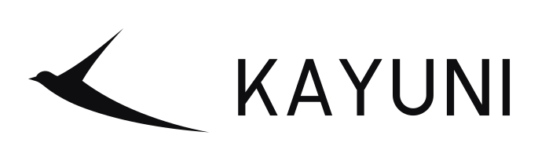
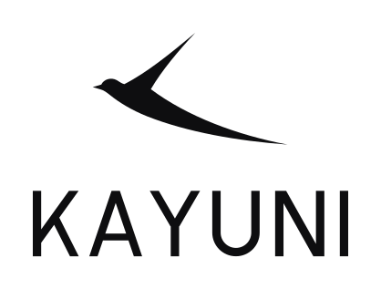
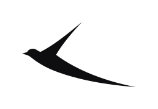
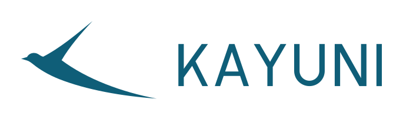
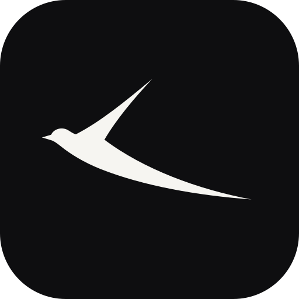
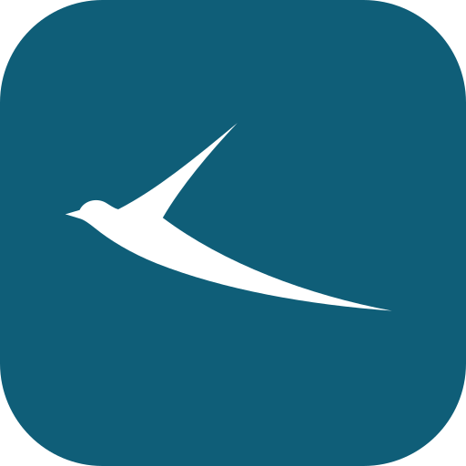
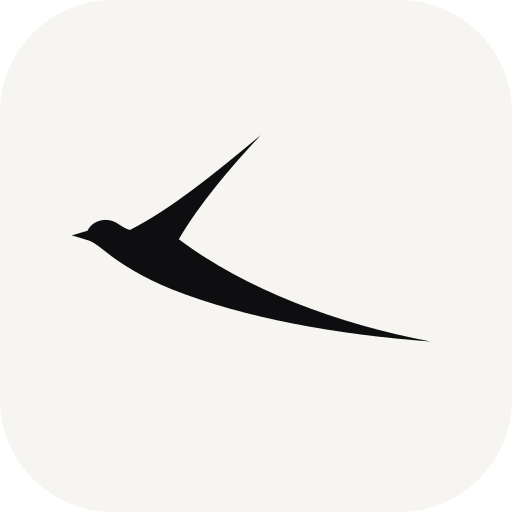
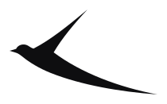

01 — Concept
Kayuni: a small bird that sees far
Kayuni means “small bird” in Tumbuka. The mark is a swift, drawn as one continuous line: a small head, a wing that rises steeply, and a long tail that settles like a trend line. Read one way it is a bird in flight. Read another way it is a chart that rises and then flattens, which is the core job of a research firm.
02 — Logo
Lockups

Primary · horizontal
Stacked
Mark
Reversed on Ink
Lake on white03 — Colour
One accent colour, used sparingly
#0E0E10 · rgb 14 14 16#F6F5F1 · rgb 246 245 241#0F5E78 · rgb 15 94 120#E09A2F · data highlight only04 — App icons & favicon
Small sizes




05 — 3D / WebGL
The logo in three dimensions
Built with Three.js and WebGL. About 12,000 data points swirl in and settle into the exact outline of the bird and the wordmark. The logo then turns into solid, lit 3D geometry, extruded from the same vector paths, and keeps gliding. Move the mouse to tilt it and click to replay. Open the live version · light theme
06 — Usage
Rules
| Clear space | Keep a margin equal to the height of the K on every side. Every exported file already includes half of that margin. |
| Minimum size | Horizontal lockup: 96 px / 25 mm wide. Mark alone: 20 px / 6 mm wide. Below that, use the favicon tile. |
| Don’t | Don’t recolour the mark outside the palette, stretch it, add shadows, rotate it, or flip the bird to face right. It always flies forward in reading direction, toward the text. |
| Motion | The intro plays once: the outline traces in, the bird glides into place, then the letters rise in sequence. The loader is for waiting states only. |
07 — Files
Which file to use
| Website, Figma, Illustrator | svg/: pure vector paths with no fonts, so they scale to any size. |
| Word, PowerPoint, Google Docs | png/: transparent background, several widths (use the largest that fits). |
| Printers, signage, merchandise | pdf/: vector PDF, which any print shop can open. |
| Browser tab & phone home screen | favicon/: .ico, .svg, apple-touch-icon, Android icons and web manifest. |
| LinkedIn, X, link previews | social/: avatar, banners and Open Graph image. |
| 3D / WebGL | webgl/: live Three.js page (a single offline HTML file), 3D videos in widescreen, square and vertical, and hero stills. |
| Video intros, presentations | animated/: MP4, WebM, GIF, animated SVG and an HTML intro. |